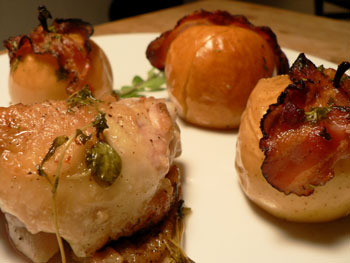
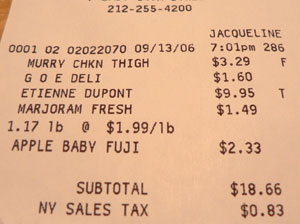

Chicken with bacon-wrapped apples
Gourmet has done it again! I’m glad I read the September issue so closely, because it was full of great fall recipes to get me out of tomato-basil mode. Tonight I made Baked chicken and bacon-wrapped lady apples, which I had been thinking about ever since I saw their picture of a soft, roasted apple hiding under a strip of smoky bacon.
My picture makes it look even more appealing.

We loved the combination of flavors in this meal. Crispy bacon and apples scented with marjoram tasted so simple and delicious. The chicken, cooked in bacon fat and braised in cider, was equally good. I served big hunks of whole-grain bread for sopping up sauce, but rice would have worked too.
The only obstacle in the way of this dinner was finding tiny apples, but maybe I just wasn’t looking hard enough. Garden of Eden had a huge bucket of them for $4.99 a pound. And it would appear, dear New York City grocery shoppers, that Garden of Eden employees aren’t necessarily trying to rip me off at every turn. They are just stupid. As you can see here, Jacqueline doesn’t know her apples.

Every last one of them is deeply engaged in foreign-language gossip while I’m checking out, and I don’t feel at all compelled to alert them to an error in my favor. Two days ago, I was undercharged by a dollar on eight ounces of French butter. The tables have turned.
Baked chicken and bacon-wrapped lady apples
8 thin slices bacon (from a 1/2-lb package)
12 lady apples (about 1 1/2 to 2 inches in diameter
6 chicken thighs (2 lb; with skin and bones)
1/2 teaspoon salt
1/2 teaspoon black pepper
1 cup unfiltered apple cider (The only unfiltered apple cider I could find was hard cider from Normandy, which was fine by me, because what I didn’t use for cooking was a perfect match for dinner.)
1/2 cup cider vinegar
2 sprigs fresh marjoram plus
2 teaspoons chopped fresh marjoram, or to taste (This is the first recipe I’ve made that called for marjoram, which spells like nothing until you start to cut it, and then it smells strongly of soap, but in a good way.)
1 tablespoon cold unsalted butter
Put oven rack in middle position and preheat oven to 400°F.
Cook bacon in a 12-inch heavy skillet over moderate heat, turning over once, until edges are lightly browned but bacon is still flexible (it will continue to cook in oven), 6 to 8 minutes total. Transfer to paper towels to drain, reserving fat in skillet.
While bacon cooks, core apples, if desired, from bottom, with pointed end of a vegetable peeler or a paring knife, leaving stems intact. Wrap a slice of bacon around each of 8 apples, securing ends of bacon by piercing with stem or using half a wooden pick.
Brush a 3-quart (13- by 9-inch) shallow baking dish with some bacon fat, then add apples to dish and bake, uncovered, 10 minutes.
Meanwhile, pat chicken dry and sprinkle with salt and pepper. Heat bacon fat in skillet over moderately high heat until hot but not smoking, then cook chicken, turning over once, until browned, about 8 minutes total. Transfer chicken with tongs to baking dish, rearranging some of apples so that chicken fits in bottom of dish, and bake, uncovered, 5 minutes.
While chicken bakes, pour off fat from skillet and add cider, vinegar, and marjoram sprigs to skillet. Boil, stirring and scraping up brown bits, until reduced by half (about 3/4 cup), about 5 minutes. Pour sauce through a fine-mesh sieve into a measuring cup, pressing on and then discarding solids. Add butter and chopped marjoram to sauce, stirring until butter is melted. Pour sauce over chicken and apples and continue to bake, uncovered, until chicken is cooked through and apples are tender, about 20 minutes more.
Makes 4 to 6 servings.
Comments
I’ve never actually used fresh marjoram, either, but always assumed it would be a lot like fresh oregano; isn’t marjoram related to oregano in the herb world?
Lots of people compare the smell (and taste) of fresh cilantro to soap, although not in such a good way; I am not one of them as I love it.
This looks and sounds wonderful, but tell me, did you really strain the pan juices through a fine seive? I never do that when a recipe calls for it since I like lots of bits in my sauces, but wonder if I should at times.
looks amazing!
foreign language gossip! hah!
What a great autumn meal! I will be trying this. The baked apples caught my eye in Gourmet as well.
The Union Square Farmer’s market almost always has apples, even in the summer. I even saw some pears on Monday, though I think it’s a bit early for them.
This is definitely a must-try!
Thanks, everyone! No, mom, I did not strain the pan juices. I don’t even know what the point is in this recipe. Those little bits of marjoram are very desirable.
My word. I hope you told them about the errors in your favor.
Actually, I lost it with an inattentive gossiping (in English) cashier today. She was actually make fun of a previous customer and I told her that was inappropriate. It escalated from there . . . I’m a terrible, terrible person.
Add a comment